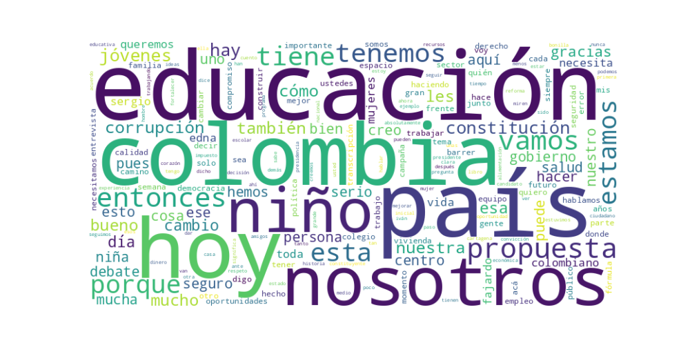

Seguidores: 5,373
1. Perfil de Comunicación El candidato presenta un estilo de comunicación deliberadamente pedagógico, cercano y accesible. Si bien su discurso demuestra un alto nivel técnico en temas específicos (educación, finanzas públicas), se esfuerza por simplificar conceptos complejos para un público amplio, utilizando analogías deportivas ("perdiendo 3-0 el partido") y un lenguaje cotidiano. La comunicación busca proyectar autenticidad y transparencia, con un tono que mezcla la formalidad del experto con la calidez de la "profe" o la servidora pública. Hay una intención clara de romper la barrera entre el candidato y el ciudadano, evidenciada en la publicación de momentos "detrás de cámaras" y conversaciones personales.
2. Temas Principales 1. Educación: Es el eje central y diferenciador de su campaña. Lo aborda con propuestas concretas: educación inicial universal (prejardín a transición), revolución en calidad educativa (alimentación, transporte escolar, comprensión lectora) y reestructuración de la educación superior/pósmedia para conectar con el mercado laboral. Ejemplo: "La educación inicial va a ser la educación superior de este país". 2. Corrupción: Lo presenta como un cáncer que roba recursos destinados a servicios básicos. Su enfoque es confrontacional y simbólico (la escoba), con propuestas de "barrer" la corrupción mediante vigilancia ciudadana, compromisos firmados y la no designación de investigados. Ejemplo: "Vamos a barrer la corrupción... son muchos los niños que hoy no tienen su programa de alimentación escolar". 3. Defensa de la Constitución del 91: Se opone frontalmente a una Asamblea Constituyente, posicionándola como un riesgo para la estabilidad y los derechos adquiridos. Propone un referendo para "blindar" la Carta durante 8 años. Ejemplo: "Promover una asamblea constituyente hoy no es reformar Colombia, es fracturarla". 4. Oportunidades para Jóvenes y Mujeres: Plantea soluciones específicas: 1 millón de empleos formales, 100,000 viviendas con subsidio para jóvenes, y fortalecimiento del liderazgo y los derechos de las mujeres. Ejemplo: "El mejor subsidio es un empleo digno... eso es lo que nosotros vamos a construir". 5. Centro como Alternativa a la Polarización: Construye un discurso identitario alrededor del "centro puro", presentándolo como la opción sensata, de gestión y alejada de los extremos "uribista" y "petrista". Ejemplo: "Colombia necesita menos extremos y más soluciones".
3. Tono y Sentimiento Dominante El tono general es propositivo y esperanzador, pero con una base de crítica firme y confrontación controlada. Critica la polarización, la corrupción del gobierno y la falta de debate sobre educación, pero siempre redirige hacia sus soluciones concretas. Transmite convicción, seriedad ("cambio serio") y un optimismo fundamentado en la experiencia y el trabajo en equipo. El sentimiento dominante es de urgencia responsable, combinado con una cercanía cálida.
4. Palabras Clave de Poder * "CAMBIO. SERIO. SEGURO.": Eslogan central que enmarca toda la propuesta. * "Barrer la corrupción": Metáfora potente y repetitiva para su principal batalla. * "Centro (puro y duro)": Identificador político clave para diferenciarse. * "Educación inicial" / "Revolución educativa": Conceptos bandera de su programa. * "Constitución del 91": Símbolo de estabilidad institucional a defender. * "Propuestas concretas" / "Hechos, no palabras": Refuerza su imagen de gestor. * "Equipo" / "Conformar el mejor gobierno": Destaca la preparación y el trabajo colectivo.
5. Conclusión Estratégica La estrategia de comunicación del candidato está diseñada para posicionarlo como la alternativa técnica, ética y sensata en un escenario percibido como polarizado y falto de profundidad. Se dirige a un electorado cansado de los extremos, que valora la gestión por sobre la ideología, y a sectores específicos como educadores, jóvenes profesionales y mujeres. Su discurso busca evocar confianza (a través de la experiencia y las propuestas detalladas), esperanza (en un futuro construido desde la educación) y indignación canalizada (contra la corrupción). No apela al resentimiento, sino a la responsabilidad ciudadana de elegir un "cambio serio". En esencia, vende competencia, coherencia y un regreso a lo básico: educación, instituciones sólidas y honestidad.
1. Resumen del Patrón de Éxito: El éxito comunicacional del candidato se fundamenta en una fórmula híbrida de seriedad técnica y conexión humana. No se basa en la polarización emocional extrema ni en el populismo confrontacional. En su lugar, construye una imagen de autoridad ética y competencia serena, combinando propuestas concretas contra problemas estructurales (corrupción, educación) con momentos de autenticidad y cercanía en entornos mediáticos informales. Su patrón es: presentar un "Cambio Serio y Seguro" como antídoto a la crisis y la desconfianza, apelando tanto a la razón (con planes específicos) como al sentido de decencia colectiva.
2. Tácticas de Comunicación Clave:
3. Temas de Mayor Resonancia: Los temas que generan mayor tracción son aquellos donde encarna la integridad frente a la decadencia y la competencia frente al caos: * Lucha Anticorrupción Concreta: No como eslogan, sino como compromiso firmado y plan específico ("10 compromisos"). * Defensa de la Constitución del 91: Como baluarte de derechos y acuerdo social a proteger frente a la amenaza de una asamblea constituyente. * Educación como Transformación Real: Presentada con ejemplos tangibles (alimentación escolar, Bachillerato Internacional público) que evocan esperanza y progreso medible. * Defensa de lo Público y los Recursos Sagrados: El dinero de los impuestos debe usarse bien, bajo control estricto, nunca para propaganda.
4. Perfil de la Audiencia Implícita: El discurso apela a un electorado cansado de la polarización tóxica pero profundamente preocupado por el estado del país. No es la base emocionalmente radicalizada de un extremo, sino un segmento de centro, ilustrado y cívico: votantes que valoran las instituciones, la seriedad en el debate, las propuestas técnicas y la decencia en la política. También busca conectar con jóvenes a través de la educación y espacios de comunicación modernos, pero desde un ángulo de responsabilidad y oportunidad, no solo de entretenimiento. Habla a indecisos que buscan una opción de gobierno creíble y no extrema.
5. Conclusión Estratégica: La clave fundamental de su poder discursivo es la encarnación del "antídoto". En un ecosistema político colombiano frecuentemente dominado por el caos emocional, la polarización maniquea y la promesa vacía, él se posiciona como la seriedad hecha persona. Su diferencial no es un carisma arrollador o una ideología revolucionaria, sino la credibilidad. Construye su potencia comunicacional desde la coherencia entre el medio (un discurso mesurado, concreto) y el mensaje (un gobierno serio, seguro). Su poder reside en presentarse no como un político tradicional, sino como un administrador ético y un pedagogo público que convoca a la ciudadanía a un pacto de cordura y defensa de lo que ya se ha construido, ofreciendo no una revolución, sino una restauración competente y decente de lo público.

Caption: Barrer la corrupción significa que @sergio_fajardo nunca nombrará a una persona investigada por corrupción, que los corruptos devolverán el dinero que les quitaron a los ciudadanos y que, desde el primer día de nuestro gobierno, habrá un plan concreto para evitarla. Hoy nos comprometimos firmando los 10 compromisos anticorrupción.
Likes: 107 | Comentarios: 4 | Reproducciones: 728
Ver en InstagramCaption: Estuvimos en Candela, un espacio que nos permitió contar nuestras propuestas para los y las colombianas. También fue un momento para conectar, hablar sin rodeos y expresar lo que sentimos por el país que queremos construir. Entre conversaciones y risas, dejamos claro que sí necesitamos un CAMBIO. SERIO. SEGURO, para Colombia. @sergiofajardovalderrama @candelaestereo
Likes: 215 | Comentarios: 5 | Reproducciones: 1,628
Ver en InstagramCaption: Debemos respetar la Constitución del 91, deslegitimar la corrupción y dar el debate para defender los derechos que ya están garantizados.
Likes: 137 | Comentarios: 4 | Reproducciones: 1,063
Ver en Instagram